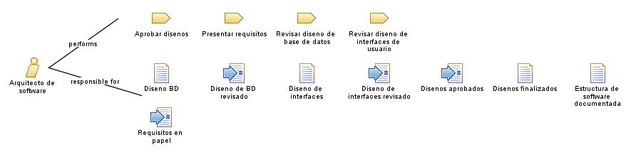

| Role: Arquitecto de software |
 |
|
Relationships
 |
||
| Primary Performs | ||
|---|---|---|
| Modifies |
|
|
Main Description
El arquitecto de software realiza las siguientes tareas:
Presentar requisitos |
Staffing
| Skills | El Arquitecto de software tiene algunas habilidades como:
Pensamiento analítico |
|---|
Key Considerations
El arquitecto de software:
Explicará la arquitectura del proyecto de manera clara |